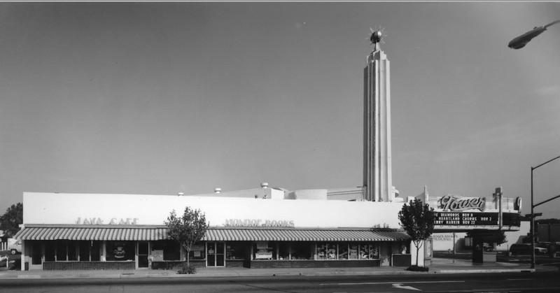

Father, search the sentence I use to keep the habit. If it is a lie, pull it. If it is a chain, break it. I ask this in the name of Jesus. Amen.
The crowd in John 8 heard the offer of freedom and answered with a résumé. We are descendants of Abraham. We have never been slaves to anyone. That is the speech of a person who has already renamed the chain.
John 8:34
I tell you the truth, everyone who sins is a slave of sin.
Jesus was not talking only about an auction block. He was talking about a repeat pattern. You do the thing. You build a sentence that makes the thing sound necessary. You do the thing again. Soon you only need to convince yourself.
Romans 6:16
Don't you realize that you become the slave of whatever you choose to obey? You can be a slave to sin, which leads to death, or you can choose to obey God, which leads to righteous living.
2 Peter 2:19
They promise freedom, but they themselves are slaves of sin and corruption. For you are a slave to whatever controls you.
You are a slave to whatever controls you. Meth controls. Tranq controls. Fentanyl, the stuff the block calls fetty, controls. Marijuana controls when you have organized the day around it and called the organization medicine. Sugar controls when the cupboard is an argument you lose every night. Caffeine controls when the first sentence of the morning is that you cannot begin without the cup.
A third cup of coffee is not a needle. The damage is not the same. The shape of the lie is the same. The lie is a fallacy, and a fallacy is a thread. Pull the thread and the habit has to stand there with no sentence on it.
Name the threads. A chain you cannot name is a chain you will keep.
The bandwagon says everybody on this block does it, and everybody in the hall does it. A crowd is not a conscience. It is a room that has agreed to stop asking. The appeal to nature says God made the plant. God made the grape, and drunkenness is still named in the list. Creation is not permission. The false comparison says at least I am not on meth, at least I am not on fetty, at least I am not the one nodding on the sidewalk. You do not get free by pointing at a heavier chain.
Special pleading says my case is different, I know my dose, I only use it to sleep or to work or to feel closer to God. If the reason only works for you, it is a private treaty with the habit. Moving the goalposts says after this bag, after this week, after the holiday. The finish line walks backward. That is a delay dressed up as wisdom. Minimization says it is just weed, just sugar, just a cup, just tranq cut into the fetty. The word just is doing all the work. Take it out and read the sentence again.
Meth builds its sentence around function. I need it to get out of bed. I can stop when I want. Tranq and fetty build a sentence around expertise. I know what I am doing. This batch is different. I will not be the one. Marijuana builds a sentence around permission. It is a plant. It makes me calmer, kinder, closer to God. Sugar and caffeine build a sentence around deserving. I earned this. I cannot start without it. I will cut back Monday. Same loom. Different thread count.

Now the harder room. Sin gets normalized by members. People you count as following God still participate in the habit and hand you the sentence. They will tell you the plant is fine, the cup is maturity, and the sugar is fellowship. They will sit in the same row and never pull the thread, because pulling it would cost them the same habit.
That does not transfer. The relationship between you and God is between you and God. Approval from a peer is inconsequential. Approval from a whole hall is still inconsequential. If the room has agreed to call bitter sweet, the room is not your witness.
Isaiah 5:20
What sorrow for those who say that evil is good and good is evil, that dark is light and light is dark, that bitter is sweet and sweet is bitter.
Galatians 1:10
Obviously, I'm not trying to win the approval of people, but of God. If pleasing people were my goal, I would not be Christ's servant.
You are obligated, before you climb any platform, to detect when you are lying to yourself. Jeremiah said the heart is a practiced liar.
Jeremiah 17:9
The human heart is the most deceitful of all things, and desperately wicked. Who really knows how bad it is?
1 John 1:8-9
If we claim we have no sin, we are only fooling ourselves and not living in the truth. But if we confess our sins to him, he is faithful and just to forgive us our sins and to cleanse us from all wickedness.
James 1:22
But don't just listen to God's word. You must do what it says. Otherwise, you are only fooling yourselves.
So here is the work. Write the sentence you use. Not the feeling. The sentence. Then mark the fallacy. Bandwagon. Nature. Comparison. Special pleading. Moving line. Minimization. If you cannot say which one it is, you have not looked. You have only repeated it.
Then ask what the sentence is protecting. Sleep. Status. A pain you will not name. A peer you do not want to lose. The answer is usually smaller than the speech.
Proverbs 14:12
There is a path before each person that seems right, but it ends in death.
Proverbs 28:13
People who conceal their sins will not prosper, but if they confess and turn from them, they will receive mercy.
Confess is not a mood. Turn is not a slogan. Mercy meets the person who stops covering.
Romans 12:2
Don't copy the behavior and customs of this world, but let God transform you into a new person by changing the way you think. Then you will learn to know God's will for you, which is good and pleasing and perfect.
Freedom is not the absence of a master. You become the slave of whatever you obey. Leave the habit that needed a lie. Take the obedience that can stand in daylight.
Psalm 139:23-24
Search me, O God, and know my heart; test me and know my anxious thoughts. Point out anything in me that offends you, and lead me along the path of everlasting life.
John 8:36
So if the Son sets you free, you are truly free.
Galatians 5:1
So Christ has truly set us free. Now make sure that you stay free, and don't get tied up again in slavery to the law.
The old chain will offer you a new sentence by evening. Detect it. Name the fallacy out loud. Pull the thread until the habit has nothing left to wear. Then stay free. The room does not get a vote.
Tonight, before you sleep, write one sentence you have been using to keep a habit. Mark the fallacy. Pray Psalm 139 over it. Do not ask the group if the sentence is allowed. Ask God. Then do the next right thing while the lie is still on the paper.
Sources and photographs
Scripture quotations are from the New Living Translation, copyright 1996, 2004, 2015 by Tyndale House Foundation. Used by permission of Tyndale House Publishers, Carol Stream, Illinois 60188. All rights reserved.
Tower Theatre, Tower District, Fresno. Historic facade photograph published with the Clio entry for the Tower Theatre.
Fresno City Hall exterior. Photograph published with First Amendment Coalition coverage of Fresno City Council open-meeting litigation.
Lincoln Memorial, National Mall, Washington, D.C. Public exterior photograph. Used here as the national image of legal emancipation, not as proof of any named crime.